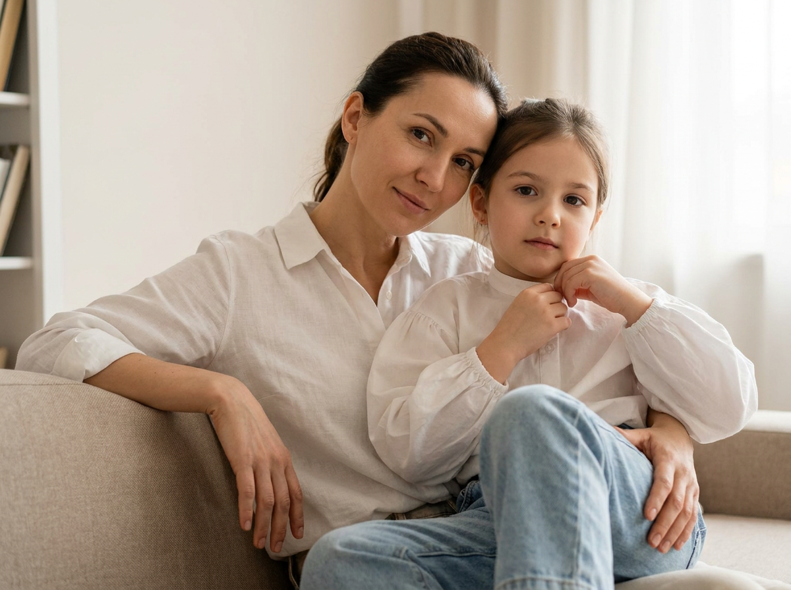
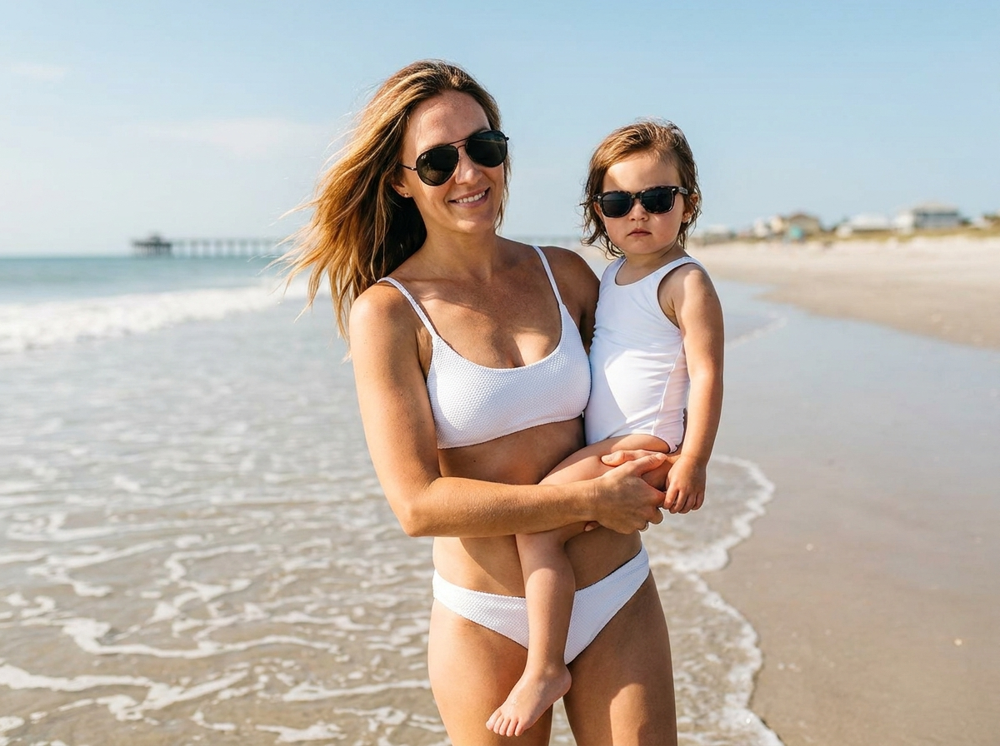
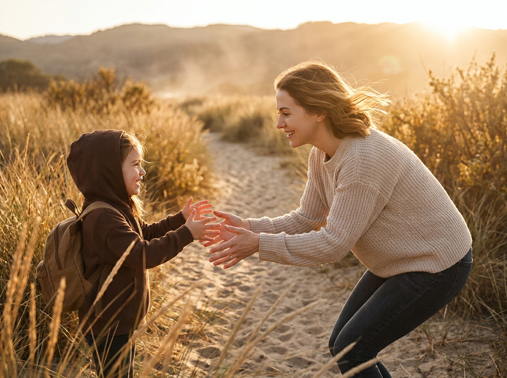
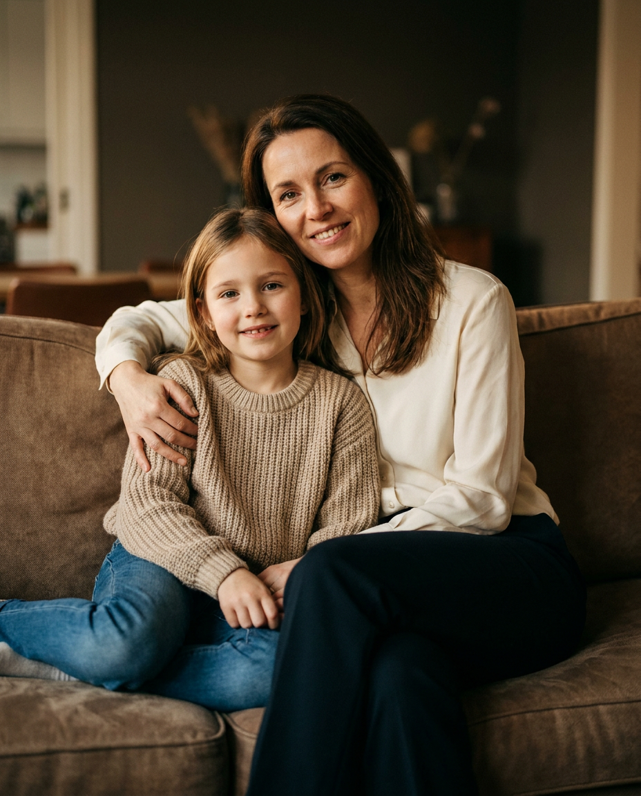
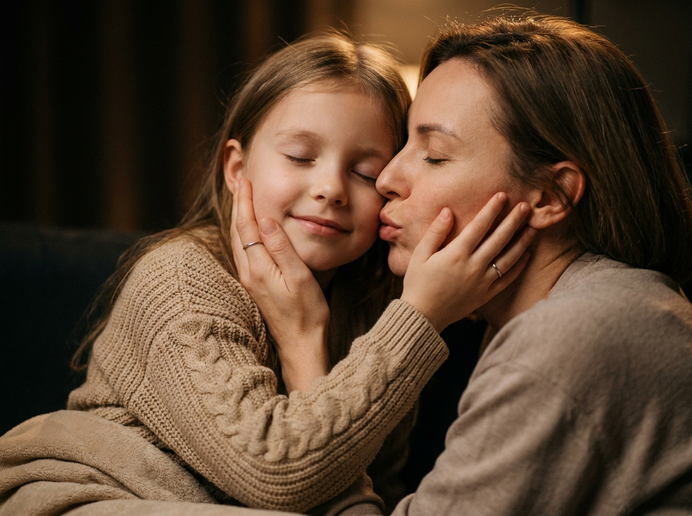
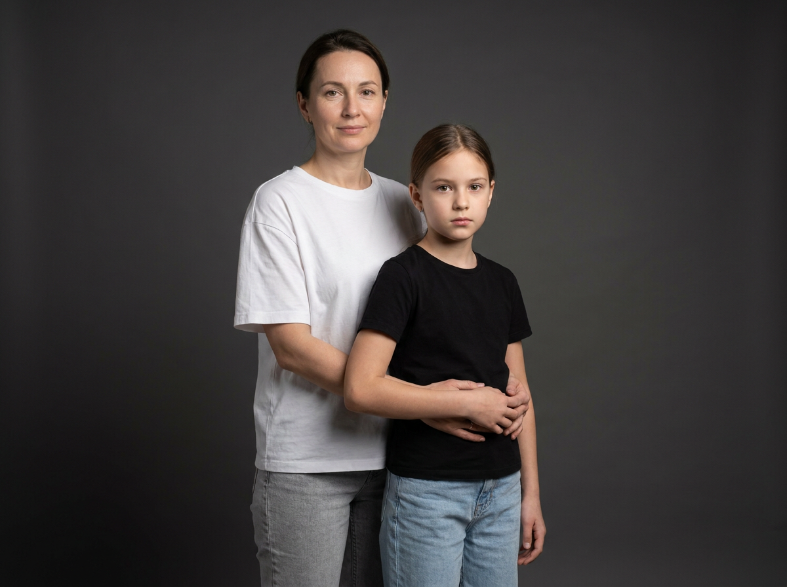
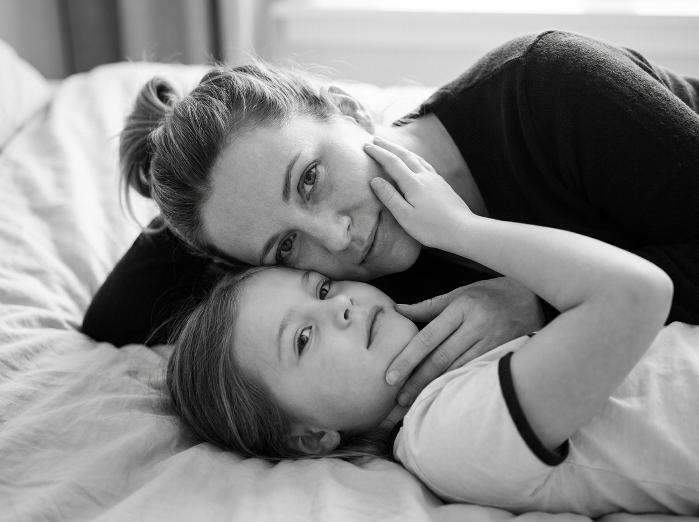
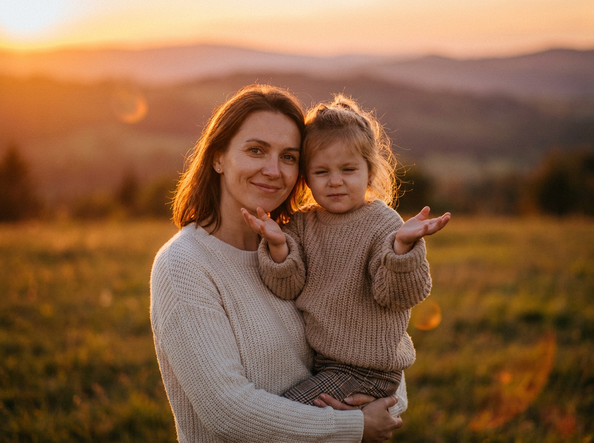
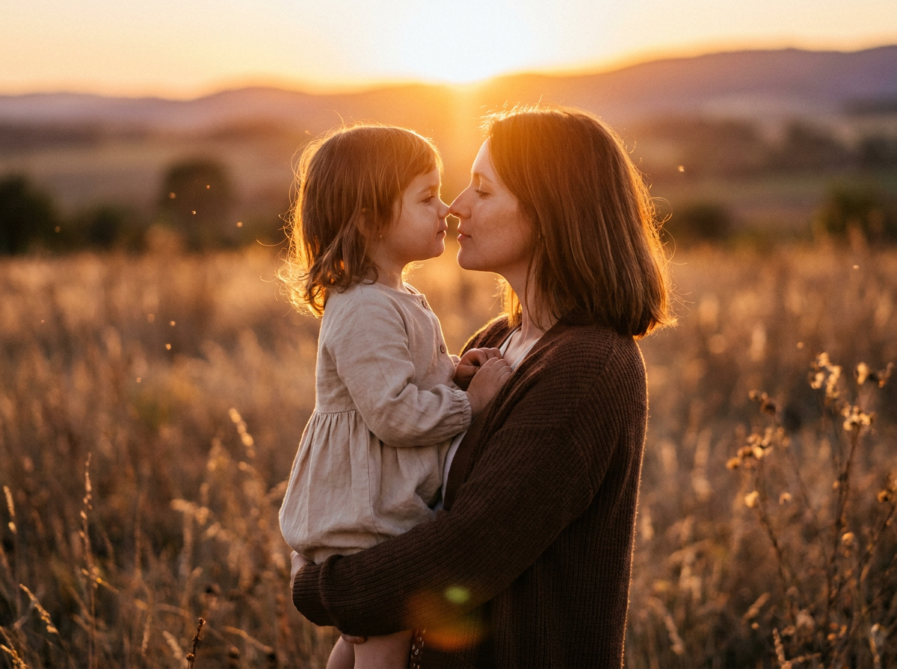
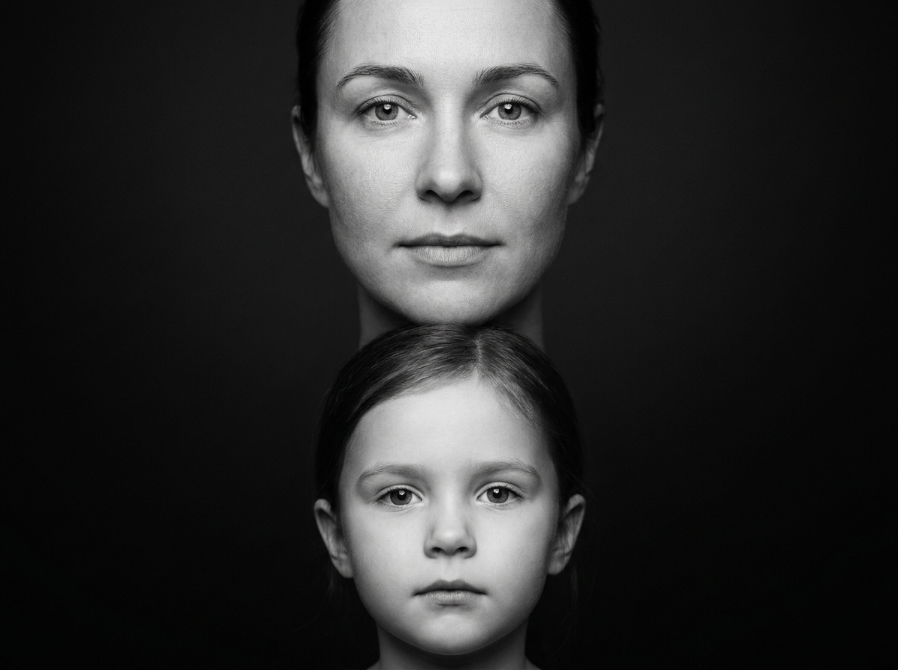

ИИ-фото с дочкой: 10 промптов для нейросети

Обычная фотография не всегда передаёт близость между мамой и дочкой: мешают случайный свет, неудачная поза или отсутствие подходящей локации. Генерация помогает собрать нужный сюжет из референса и получить кадр с заданным настроением.
В подборке — 10 сценариев для семейных ИИ-фото: от уютной съёмки на диване и нежного поцелуя до пляжа, поля на закате, fashion-портрета и строгой чёрно-белой композиции.
Как сгенерировать такое фото: пошагово
Нужен снимок анфас при ровном свете, лицо в кадре целиком, без тёмных очков и головных уборов. Разрешение от 1000 пикселей по короткой стороне. Чем чётче исходник, тем точнее модель повторит черты.
Выберите сценарий ниже и нажмите «Копировать» — текст уйдёт в буфер целиком, вместе с командой сохранения внешности. Эта команда стоит первой строкой и отвечает за то, чтобы на выходе было ваше лицо, а не случайное.
Кнопка «Сгенерировать» рядом с каждым промптом открывает модель в новой вкладке. Nano Banana Pro работает с референсом лица — в отличие от моделей, которые генерируют портрет с нуля и узнаваемость теряют.
Промпт — в поле ввода, портрет — через загрузку референса. Порядок значения не имеет, но без референса команда сохранения внешности работать не будет: модели нечего сохранять.
Для сторис и ленты берите 9:16, для превью и обложек — 4:3. Первый результат редко идеален: если поза или свет ушли не туда, поправьте соответствующую часть промпта и запустите заново. Обычно хватает двух-трёх итераций.
10 промптов для генерации
1. Домашний портрет на диване
Строго сохранить внешность по загруженному референсу: черты лица, пропорции, мимику и текстуру кожи без изменений. Фотореалистичный lifestyle-портрет мамы и дочери в уютной домашней обстановке. Лица должны точно соответствовать загруженному референсу: сохранить индивидуальные черты, форму глаз, бровей, носа, губ, овал лица, пропорции и естественную мимику, не менять внешность. Мама находится слева, сидит на диване или опирается на его спинку, слегка развёрнута к камере; голова близко к краю спинки. Взгляд прямой, выражение спокойное и нежное, едва заметная полуулыбка. На маме матовая белая или молочная рубашка без принтов. Дочь сидит впереди справа или по центру, прижимается к маме и немного наклоняется вперёд. Она смотрит в объектив серьёзно и мягко, без широкой улыбки. На дочери белая блуза с объёмными рукавами, заметными сборками и манжетами. Рассеянный дневной свет из окна, натуральные оттенки кожи, мягкие тени, малая глубина резкости, объектив 50 мм, f/2.2, вертикальный кадр.
2. Пляжная прогулка у моря

Строго сохранить внешность по загруженному референсу: черты лица, пропорции, мимику и текстуру кожи без изменений. Солнечная фотореалистичная lifestyle-фотография мамы и маленькой дочери на морском берегу. Лица взять с загруженного референса и сохранить без изменения: индивидуальные особенности, пропорции, мимику, форму глаз, носа, губ и овал лица. Светлый песок, у переднего края кадра тонкие волны и белая пена прибоя. На горизонте виден далёкий причал или мол, рядом угадываются небольшие здания, сильно размытые перспективой. Мама расположена справа или в центре, ближе к объективу, идёт вдоль воды или стоит у кромки моря. Её волосы развевает ветер, глаза скрыты тёмными или зеркальными солнцезащитными очками-авиаторами. На ней белый раздельный купальник или лаконичный белый комплект бикини без крупного рисунка, с естественной фактурой ткани. Дочь находится слева, сидит у мамы на руках или бедре, прижата к ней спереди и слегка повёрнута к камере. Яркое солнце, живые блики на воде, объектив 35 мм, f/4, естественная перспектива, вертикальный lifestyle-кадр.
3. Тёплая встреча на тропинке

Строго сохранить внешность по загруженному референсу: черты лица, пропорции, мимику и текстуру кожи без изменений. Кинематографичная фотореалистичная сцена мамы и дочери в золотой час. Лица персонажей соответствуют загруженному референсу с сохранением формы глаз, бровей, носа, губ, овала, пропорций и естественного выражения. Место действия — узкая природная тропинка или песчаная дорожка среди высокой сухой травы и кустов. Вдали мягко размыты холмы или лес. В воздухе тёплая дымка и лёгкий пылевой эффект. Камера установлена низко, почти на уровне травы: крупные размытые стебли занимают часть переднего плана и частично перекрывают низ кадра. Дочь находится слева, ниже и ближе к камере, идёт по дорожке и немного поворачивается к маме. Мама справа, выше и дальше, делает шаг или наклоняется вперёд, вытягивается навстречу ребёнку и держит руки примерно на уровне дочери. Мягкий солнечный контровой свет, тёплая цветокоррекция, малая глубина резкости, объектив 35 мм, f/2.8, вертикальная композиция.
4. Объятие на терракотовом диване

Строго сохранить внешность по загруженному референсу: черты лица, пропорции, мимику и текстуру кожи без изменений. Фотореалистичный семейный lifestyle-портрет мамы и дочери в тёплой домашней атмосфере. Использовать лица с референса, точно сохранив индивидуальные черты, форму глаз, бровей, носа, губ, овал лица, мимику и реальные пропорции. Мама сидит справа на коричневом или терракотовом диване, корпус слегка развёрнут к объективу. Она обнимает девочку сзади и сбоку, мягко удерживая её руками в районе плеч и груди. Голова мамы чуть наклонена, на лице нежная лёгкая улыбка, взгляд направлен в камеру или немного поверх неё. На маме кремовая или бежевая блуза с длинными рукавами и почти чёрные тёмные брюки. Девочка сидит слева, ближе к переднему плану, прижимается к маме и слегка склоняется в её сторону. Она смотрит в объектив с мягкой улыбкой; ладони можно естественно переплести, а руки мамы могут поддерживать её кисти. Тёплый рассеянный свет, натуральная фактура ткани, объектив 50 мм, f/2, вертикальный кадр.
5. Нежный поцелуй крупным планом

Строго сохранить внешность по загруженному референсу: черты лица, пропорции, мимику и текстуру кожи без изменений. Очень близкий фотореалистичный портрет мамы и дочери в тёплой кинематографичной стилистике. Лица должны соответствовать загруженному референсу без изменения внешности: сохранить характерные черты, пропорции, форму глаз, носа, губ, бровей и естественную мимику. Съёмка проходит в тёмной комнате или минималистичной студии с матовым глубоким фоном; детали позади почти отсутствуют и мягко растворяются в нерезкости. Цветовая гамма состоит из бежевых, карамельных и шоколадных оттенков. Вертикальный кадр снят с очень близкого расстояния: в композиции только головы, плечи и руки. Мама слева наклоняется вправо к дочери, глаза прикрыты, выражение спокойное и заботливое; её губы направлены к лицу ребёнка в момент нежного поцелуя, а не к объективу. Дочь справа поворачивает лицо к маме, глаза закрыты или расслаблены, улыбка едва заметна. Мягкий тёплый боковой свет, shallow depth of field, объектив 85 мм, f/1.8, деликатные тени на коже.
6. Студийный fashion-портрет

Строго сохранить внешность по загруженному референсу: черты лица, пропорции, мимику и текстуру кожи без изменений. Фотореалистичный студийный портрет мамы и дочери в духе fashion editorial. Лица взять из загруженного референса и сохранить индивидуальность без ретуши, меняющей внешность: точные глаза, брови, нос, губы, овал, пропорции и естественная мимика. Вертикальная композиция, гладкий однотонный тёмно-серый фон без фактуры и посторонних предметов. Камера расположена на уровне лица и груди, перспектива естественная, без широкоугольных искажений. Мама стоит сзади и слева, немного выше дочери, слегка наклоняется вперёд. Она смотрит в объектив со спокойным выражением и лёгкой уверенной улыбкой. Одна рука свободно опущена вдоль тела, вторая естественно поддерживает дочь за талию или спину. На маме свободная белая футболка оверсайз из матовой ткани и светло-серые или голубовато-серые джинсы. Дочь находится впереди справа, ближе к камере, поза расслабленная и естественная. Студийный мягкий свет, аккуратная детализация ткани, объектив 50 мм, f/4, вертикальный editorial-кадр.
7. Лежачий чёрно-белый портрет

Строго сохранить внешность по загруженному референсу: черты лица, пропорции, мимику и текстуру кожи без изменений. Фотореалистичная чёрно-белая семейная фотография в стиле fine art portrait. Лица мамы и дочери должны совпадать с загруженным референсом: без изменения формы глаз, бровей, носа, губ, овала, пропорций и естественной мимики. Композиция лежачая: обе фигуры расположены вплотную к камере, лица занимают крупную часть кадра. Ракурс сверху или с лёгким наклоном по диагонали, словно фотограф снимает с края кровати. Мама находится в верхней части изображения, лежит на спине или на боку и поворачивается к дочери. Рядом с ней лежит девочка, лица близко соприкасаются, выражения спокойные и доверительные. Фон напоминает уютную комнату: внизу светлая простыня с мягкими складками, на персонажах тёмная одежда без надписей и заметных рисунков. Посторонних предметов и мебели нет. Рассеянный дневной свет из окна, мягкие тени без пересветов, монохромная обработка, объектив 50 мм, f/2.8, лёгкое плёночное зерно.
8. Прогулка по полю на закате

Строго сохранить внешность по загруженному референсу: черты лица, пропорции, мимику и текстуру кожи без изменений. Фотореалистичный lifestyle-портрет мамы и дочери на природе в тёплой кинематографичной гамме golden hour. Лица соответствуют загруженному референсу, все индивидуальные черты, пропорции, форма глаз, бровей, носа, губ, овал и мимика сохранены. Место действия — широкое поле или луг с мягкой травой и низкими холмами на заднем плане; дальний план слегка размытый, без узнаваемых объектов. Вертикальный кадр снят на уровне глаз или чуть ниже. Мама слева, ближе к камере, идёт по полю и несёт дочь на руках, плотно прижимая её к корпусу. Она улыбается тепло и смотрит прямо в объектив. Девочка расположена справа, ближе к центру, сидит у мамы на руках и тоже немного повёрнута к камере. Она улыбается или щурится от солнца, обе руки подняты вверх, ладони раскрыты. Руки мамы надёжно охватывают корпус и ноги ребёнка. Закатный свет, мягкие тёплые блики, натуральная трава, объектив 35 мм, f/2.8, лёгкое размытие фона.
9. Поцелуй в закатном свете

Строго сохранить внешность по загруженному референсу: черты лица, пропорции, мимику и текстуру кожи без изменений. Фотореалистичный кинематографичный портрет мамы и дочери в поле на закате, golden hour и выраженный backlight. Лица взять с референса, сохранив реальные черты, форму глаз, бровей, носа, губ, овал лица, пропорции и естественную мимику. На переднем и среднем плане — сухая трава с мягкими волнами, за фигурами сильно размыты лес или холмы. Яркое солнце находится позади персонажей, создаёт золотой контур на волосах, лёгкие блики и воздушный флер. Камера на уровне глаз, фигуры занимают левую и центральную части кадра. Мама стоит справа в профиль или полупрофиль; отдельные пряди её волос подсвечены сзади. Дочь слева, лицо повернуто к маме. Между ними нежный контакт: мама наклоняется вперёд и целует дочь в лоб либо мягко соприкасается с ней носами. У обеих спокойные, любящие выражения, без постановочной широкой улыбки. Объектив 50 мм, f/2, тёплый мягкий контраст, вертикальная композиция.
10. Симметричный монохромный портрет

Строго сохранить внешность по загруженному референсу: черты лица, пропорции, мимику и текстуру кожи без изменений. Вертикальный художественный чёрно-белый портрет мамы и дочери в стиле fine art. Лица должны точно соответствовать загруженному референсу: сохранить индивидуальные особенности, форму глаз, бровей, носа, губ, овал лица, пропорции и естественное выражение, не менять внешность. Строго фронтальная съёмка, лица расположены по центральной оси и образуют симметричную композицию. В верхней половине кадра — лицо мамы, занимающее верхнюю треть или почти половину изображения: аккуратные брови, выразительные глаза, спокойный задумчивый взгляд прямо в объектив, мягкие тени под глазами и на щеках. В нижней части — лицо дочери с детскими чертами, нейтральным выражением и прямым взглядом; оно занимает нижнюю треть или половину кадра. Фон глубокий матово-чёрный или тёмный градиент без деталей. Мягкий студийный свет сочетается с контрастной монохромной обработкой, кожа остаётся естественной, присутствует лёгкое плёночное зерно. Объектив 85 мм, f/5.6, высокая детализация, графичный cinematic portrait.
Что важно учесть в этом стиле
Семейный кадр лучше работает, когда в нём есть один главный эмоциональный жест: объятие, взгляд, поцелуй или движение навстречу. Не перегружайте сцену реквизитом — лицо и контакт между персонажами должны оставаться центром композиции.
Для фотореализма задавайте конкретный источник света, положение камеры и объектив. 35 мм подойдёт для движения и пейзажа, 50 мм — для естественного портрета, а 85 мм даст плотный крупный план без заметных искажений. Если используете референс, отдельно проверяйте руки, пальцы и сходство лиц.
Идеи для вариаций
- Замените диван на кресло у окна или деревянную скамью на веранде.
- Перенесите пляжную сцену на каменистый берег, к озеру или в пасмурный день.
- Добавьте в поле лёгкие летящие ленты, букет сухоцветов или плед.
- Попробуйте осеннюю палитру с шерстяными свитерами вместо белой одежды.
- Сделайте серию в одном стиле: общий план 35 мм, поясной портрет 50 мм и крупный план 85 мм.
Как собрать свой промпт
Начните с формата снимка и отношений персонажей: «вертикальный семейный портрет, мама и дочь, близкий контакт». Затем опишите локацию, точную позу, одежду, выражения лиц и направление взгляда. После этого добавьте свет — например, рассеянный дневной или контровой закатный.
В финале укажите объектив, диафрагму, глубину резкости и ограничения: без лишних пальцев, надписей на одежде, пластиковой кожи и искажённых лиц. Для одного сюжета полезно сделать 4–8 генераций, меняя только один параметр за попытку.
Ошибки, из-за которых кадр не получается
- Слишком общая поза. Формулировка «мама обнимает дочь» оставляет модели слишком много вариантов. Укажите, кто справа, кто ближе к камере и где находятся руки.
- Несовместимый свет. Не смешивайте дневное окно, жёсткую вспышку и закатный контровик в одном описании.
- Перегруженный фон. Множество предметов отвлекает от лиц и повышает риск случайных деталей.
- Широкоугольный крупный план. Объектив 24 мм возле лица часто увеличивает нос и искажает пропорции; для портрета лучше 50–85 мм.
- Отсутствие проверки рук. После генерации отдельно рассмотрите пальцы, кисти и точки соприкосновения персонажей.
Частые вопросы
Как сделать такое ИИ-фото бесплатно?
Попробуйте Kandinsky или Шедеврум: они подходят для текстовой генерации, но точность сходства с референсом и число доступных попыток могут быть ограничены. Krea AI и Arena.ai удобны для тестов разных моделей, однако работа с лицом, исходной фотографией и настройками зависит от конкретного режима. Для результата с дочкой заранее проверьте правила загрузки фотографий и не используйте снимки ребёнка без согласия законного представителя.
Как сохранить сходство мамы и дочки?
Загрузите качественный референс с хорошо освещёнными лицами и опишите, какие черты нельзя менять. Не добавляйте сильную стилизацию, экстремальный ракурс или закрывающие лицо аксессуары. Если сервис поддерживает силу изображения-референса, начните со среднего значения и сделайте несколько вариантов.
Почему нейросеть меняет возраст ребёнка?
Модель может ориентироваться на одежду, позу и общий стиль, а не на возраст. Укажите его словами, добавьте рост и детские пропорции, попросите сохранить естественные руки и лицо ребёнка. Не смешивайте в одном промпте признаки младенца, школьницы и взрослой девушки.
Что добавить для более реалистичной фотографии?
Пропишите источник и направление света, фокусное расстояние, диафрагму, материал одежды и глубину резкости. Полезны ограничения вроде «натуральная кожа», «реалистичные пальцы», «без лишних конечностей» и «без текста на одежде». Слишком длинный список эффектов лучше сокращать до тех, которые нужны именно этому сюжету.